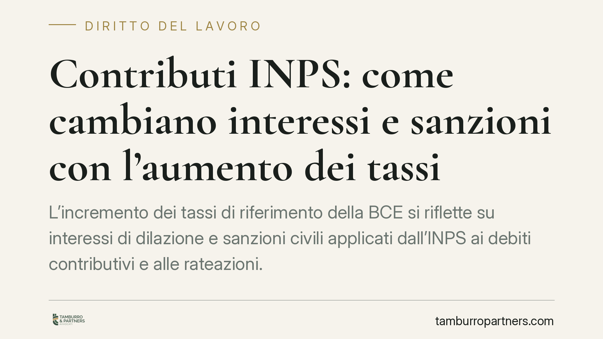

Contributi INPS: come cambiano interessi e sanzioni con l'aumento dei tassi
L'incremento dei tassi di riferimento della BCE si riflette su interessi di dilazione e sanzioni civili applicati dall'INPS ai debiti contributivi e alle rateazioni. Poiché diverse maggiorazioni sono ancorate al tasso ufficiale, ogni ritardo o omissione diventa più oneroso. Per i datori di lavoro è opportuno rivedere posizioni aperte, piani di rateazione e riflessi sul DURC.

Il fatto
L'aumento dei tassi di riferimento della Banca Centrale Europea ha effetti diretti sulla misura degli interessi e delle sanzioni applicati dall'INPS. Diverse voci del sistema contributivo sono infatti agganciate al tasso ufficiale (TUR): quando questo sale, cresce automaticamente anche il costo dei debiti verso l'Istituto.
Secondo una circolare INPS di aggiornamento dei parametri — di cui consigliamo di verificare numero, anno e data di decorrenza sul sito istituzionale prima di assumere decisioni — gli importi rivisti riguardano sia gli interessi sulle rateazioni sia le sanzioni civili per versamenti tardivi, omissioni ed evasioni.
Inquadramento normativo
Le sanzioni civili sui debiti contributivi sono disciplinate dall'art. 116, comma 8, della Legge 388/2000. La norma distingue due ipotesi.
Nel caso di omesso o ritardato versamento (mancato pagamento di contributi comunque esposti nelle denunce obbligatorie), la sanzione è pari al TUR maggiorato di 5,5 punti, calcolata su base annua, entro il tetto massimo del 40% dell'importo dei contributi non versati.
Nel caso di evasione contributiva (registrazioni o denunce omesse o infedeli per occultare rapporti o retribuzioni), la sanzione è pari al 30% annuo, entro il tetto massimo del 60% dell'importo dei contributi.
Sull'aliquota ancorata al TUR incide direttamente il rialzo dei tassi: l'aumento del tasso ufficiale si trasferisce quindi sulla componente relativa alle omissioni e sugli interessi delle dilazioni.
Le rateazioni dei debiti contributivi seguono la disciplina delle dilazioni amministrative gestita dall'INPS, che prevede l'applicazione di un tasso di interesse di dilazione periodicamente aggiornato. Anche in questo caso, l'aumento del parametro di riferimento comporta un incremento del costo complessivo del piano.
È utile ricordare che l'art. 116, comma 15, della Legge 388/2000 consente, in presenza di determinati presupposti, la riduzione delle sanzioni civili: tra le ipotesi rilevano le oggettive incertezze normative, i casi di crisi aziendale o le situazioni assimilabili individuate dalla legge e dai regolamenti dell'Istituto. La riduzione non è automatica e richiede istanza motivata.
Implicazioni pratiche
Per il datore di lavoro l'effetto immediato è un aumento del costo di ogni posizione debitoria non regolarizzata. Le rateazioni in corso, se ricalcolate secondo i nuovi parametri, possono risultare più onerose; i nuovi piani partono da una base più alta.
Attenzione poi ai riflessi sul DURC (Documento Unico di Regolarità Contributiva). Un debito non gestito o una rata non pagata possono determinare l'irregolarità, con conseguenze dirette sulla partecipazione ad appalti pubblici, sulla fruizione di agevolazioni e incentivi e sulla stessa continuità operativa in molti settori regolati.
Il tema riguarda anche chi ha già una posizione aperta con l'Istituto: il maggior onere si applica sui periodi maturati, quindi l'attesa non è neutrale.
Cosa fare in concreto
- Verificate le posizioni aperte sul Cassetto previdenziale: individuate debiti scaduti, avvisi bonari e rateazioni in corso, con l'esatta imputazione tra omissione ed evasione.
- Ricalcolate i piani di rateazione alla luce dei parametri aggiornati e valutate se anticipare i versamenti dove il maggior interesse rende conveniente la chiusura.
- Monitorate il DURC prima di scadenze rilevanti (gare, SAL, richieste di incentivi), evitando che un debito non gestito ne comprometta la regolarità.
- Valutate l'istanza di riduzione delle sanzioni ex art. 116, comma 15, L. 388/2000 quando ricorrano i presupposti previsti, documentandone le ragioni.
- Confrontate il numero e la data della circolare applicabile con la fonte ufficiale INPS, così da ancorare i calcoli ai parametri effettivamente in vigore.
La gestione tempestiva delle posizioni contributive resta lo strumento più efficace per contenere l'impatto dei rialzi. Consigliamo di intervenire prima delle scadenze critiche, quando i margini di manovra sono più ampi.
---
Contributo informativo a cura di Tamburro & Partners - Avv. Giuseppe Tamburro. Non costituisce parere legale.
Ogni storia di lavoro ha i suoi tempi.
Se gestisci HR e vuoi un confronto su contenzioso, ispezioni o licenziamenti, scrivi allo studio. Ti rispondiamo entro un giorno lavorativo.